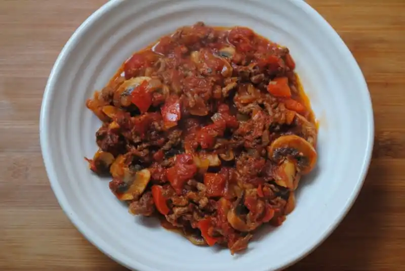

Bolognese

Who doesn't love some good ol spagbol?
An easy to follow and cheap recipe to make even when high.
Whip up this meal for one or the whole flat, and serve with spaghetti or pasta, eat it alone or even make a bolognese toastie,skys the limit!
The ingredients below will feed around 4 people.
Ingredients
- 500g minced beef
- 1 clove of crushed garlic or a teaspoon of easy/lazy garlic
- 1 medium onion, peeled and chopped
- 1 red pepper, deseeded and chopped
- 400g tin chopped tomatoes
- A handful of carrots, peeled and chopped
- A handful of mushrooms, sliced
- 200ml beef stock
- Salt, pepper and dried mixed herbs(to taste)
Steps
- Heat a little oil in a frying pan and cook the mince, seasoned with a little salt and pepper, for around 3-5 minutes until browned. You may have to do this in batches as you don’t want to crowd the pan.
- Set the meat aside and return the pan to the heat.
- Fry the garlic, onions, mushrooms and carrots in a little oil for a 5-10 minutes until the veggies begin to soften.
- Add in the chopped tomatoes and stock.
- Season to taste with salt, pepper, dried herbs (around a teaspoon will do) and a splash of Worcestershire sauce – or more if you prefer.
- Stir everything together and reduce the heat. Cover and leave to simmer for 25-30 minutes.
- Check every 5-10 minutes and give it a stir.
- Serve with spaghetti or other pasta!